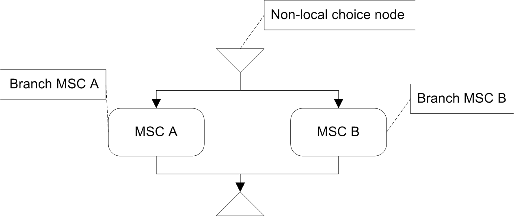
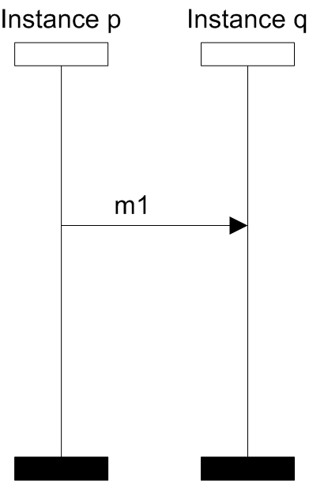
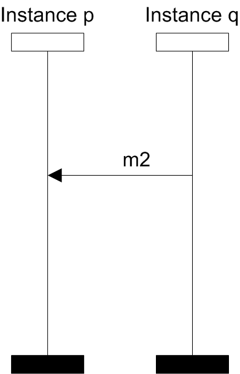
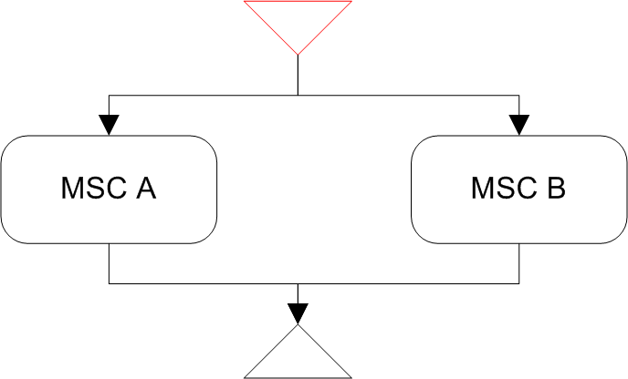
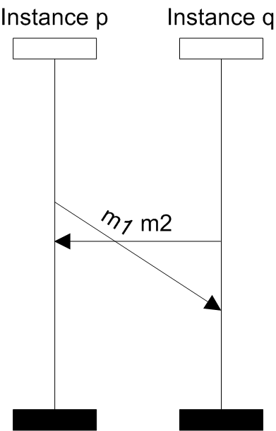

Non-local choice
is a property of an HMSC node, that has more than one successor, occurring when multiple different behaviors (branches MSC A or MSC B) are possible and the branches are initiated by different instances (MSC A is initiated by the Instance p, MSC B is initiated by the Instance q). Therefore the resulting behavior of the system may contain a combination of both branches, resulting in a non specified implied behavior.
-
- 
- HMSC specification with a branching node
-
- 
- MSC A
-
- 
- MSC B
More formally, a branching node is called a non-local choice if one of the conditions is satisfied:
- There exists a branch that is initiated by more than one instance.
- There exist two branches, such that each is initiated by different instance
- .
The result of the check on the previous example marks the non-local choice node with the red color:
-
- 
- Result of SCStudio
-
- 
- Implied behavior